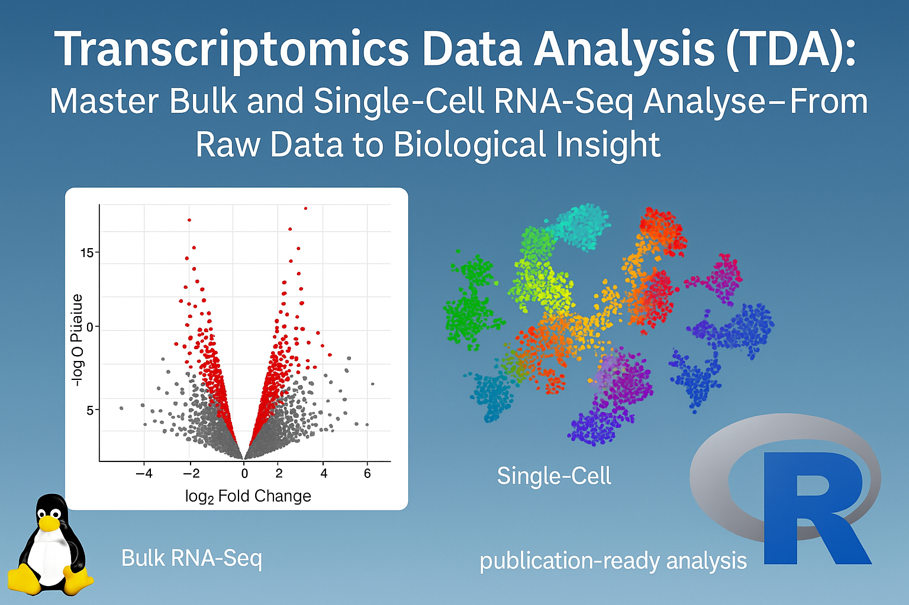
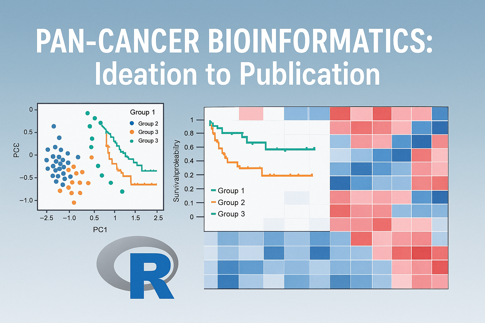
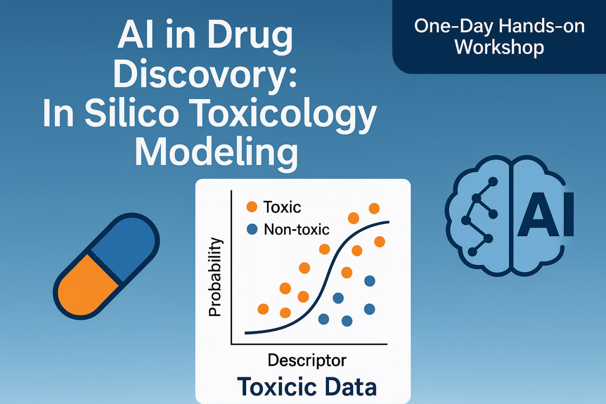
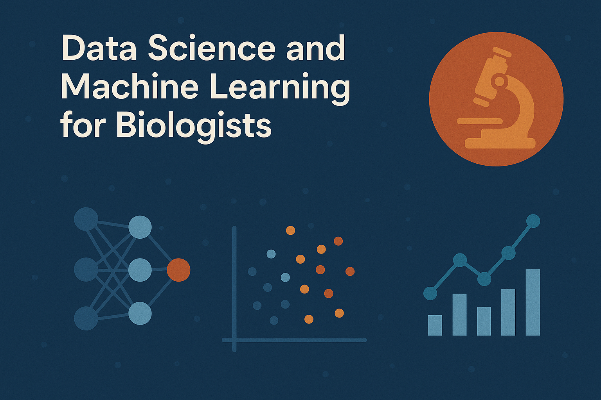

Teaching
I teach.
Transcriptomics Data Analysis (bulk + Single Cell Analysis)

Transcriptomics Data Analysis (TDA) is a live, instructor-led training program designed to introduce participants to best practices in the analysis of high-throughput RNA sequencing (RNA-seq) data. This course empowers learners to independently analyze gene expression datasets using lightweight, open-source tools — with a strong emphasis on the R programming language and the Bioconductor ecosystem.
Biomarker Identification using Machine Learning

This project applies advanced machine learning and bioinformatics techniques to identify novel biomarkers from high-dimensional biological data, focusing on cancer genomics. By leveraging TCGA (The Cancer Genome Atlas) data and modern computational approaches, we aim to discover clinically relevant biomarkers that can improve disease diagnosis, prognosis, and treatment selection.
Pan-Cancer Bioinformatics with R: Ideation to Publication

Pan-Cancer Bioinformatics with R is an intensive, hands-on training program designed to guide participants through the complete journey of pan-cancer analysis—from research idea to publication. Across four interactive sessions, participants will learn how to access and process TCGA datasets, perform expression, survival, mutation, and immune analyses, and integrate multi-omics data for biomarker discovery. The course emphasizes practical R workflows, publication-ready visualization, and manuscript preparation strategies. Ideal for graduate students, early-career researchers, and clinicians aiming to publish high-impact pan-cancer studies.
AI in Drug Discovery: In Silico Toxicology Modeling

This one-day, hands-on workshop introduces participants to AI-powered toxicology modeling for modern drug discovery. Participants will learn how to use machine learning and cheminformatics techniques to predict compound toxicity, classify molecules as toxic or non-toxic, and analyze structure–activity relationships using real-world datasets. Designed for students, researchers, and professionals in bioinformatics, computational chemistry, and pharmacology, this workshop provides practical experience in building predictive toxicology models that accelerate safer drug development.
Data Science and Machine Learning for Biologists

Taught by Md. Jubayer Hossain at CBLAST, University of Dhaka, this course introduces biologists to the core principles of data science and machine learning through hands-on examples and biological case studies. Participants learn how to process, visualize, and analyze biological data using Python and R, and explore practical applications of supervised and unsupervised learning in genomics, transcriptomics, and health data. Designed for students and researchers in the life sciences, this course bridges biology and computation, empowering learners to apply AI-driven methods in modern biological research.